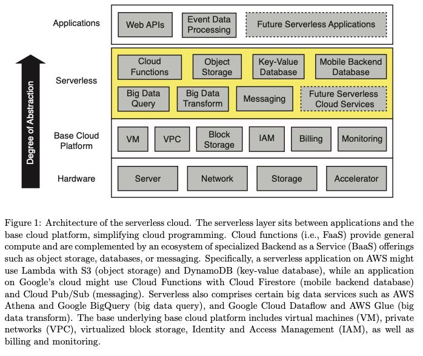
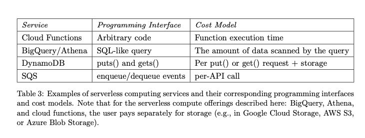
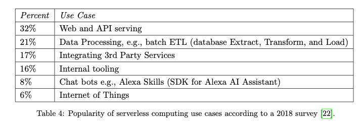
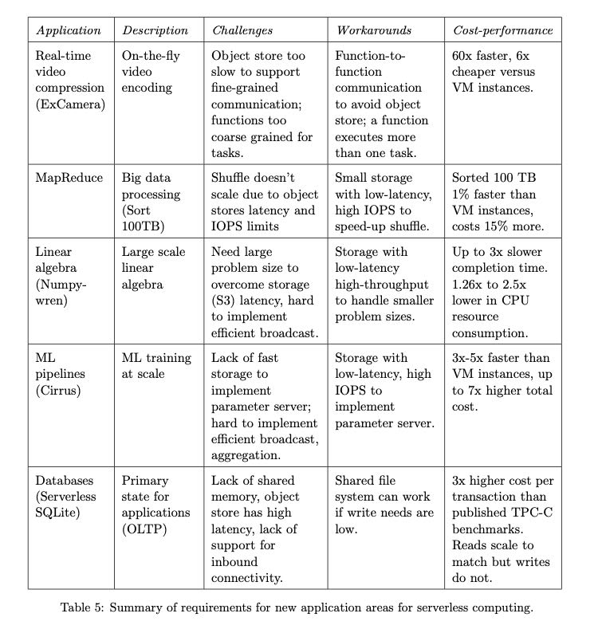
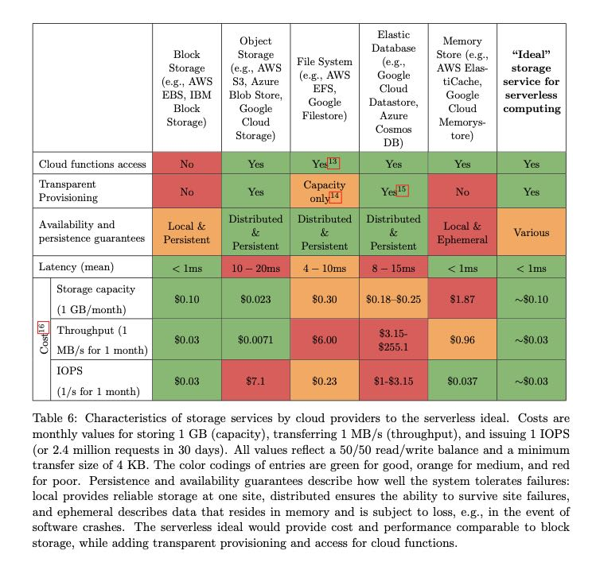

Cloud Programming Simplified: A Berkeley View on Serverless Computing
Technical Report No. UCB/EECS-2019-3 http://www2.eecs.berkeley.edu/Pubs/TechRpts/2019/EECS-2019-3.html
serverless & serverful computing 最关键的3个区别是：
- 存算分离
- 自动化资源分配
- 按照使用资源付费
- Decoupled computation and storage. The storage and computation scale separately and are provisioned and priced independently. In general, the storage is provided by a separate cloud service and the computation is stateless.
- Executing code without managing resource allocation. Instead of requesting resources, the user provides a piece of code and the cloud automatically provisions resources to execute that code.
- Paying in proportion to resources used instead of for resources allocated. Billing is by some dimension associated with the execution, such as execution time, rather than by a dimension of the base cloud platform, such as size and number of VMs allocated.
下图是通常的serverless cloud架构图：排除Hardware的话，分别可以认为是IaaS(Infra), BaaS(Backend), PaaS(Platform)或者是FaaS(Function)

几种服务的编程接口和付费方案

各种使用serverless的场景情况：
- 大部分是web/API serving，因为这个是无状态的
- data processing 几乎也是无状态的，只需要提供足够的计算资源
- 集成三方库以及Chat bots, IoT这些好像几乎都是无状态的

作者那5个项目讨论了一下迁移到serverless computing上的情况，看看迁移上去之后的性能以及开销对比如何，并且整理了serverless的缺陷以及要解决的问题。

几个缺陷如下：
- Inadequate storage for fine-grained operations （没有合适的弹性存储用于帮助细粒度的操作，比如function-function之间交换比较大量数据，使用s3/dynamodb延迟都相当高）
- Lack of fine-grained coordination （不支持高效的细粒度协调，使用SNS/SQS延迟都非常高）
- Poor performance for standard communication patterns (通信上优化空间很大，没有办法做local batch或者优化拓扑结构，解决办法可能是编程模型里面支持描述拓扑结构这样)
- Predictable Performance （性能上上不太稳定，启动Function开销以及预热过程等）
整篇文章下来我觉得存储服务是迁移到serverless computing坑最多的地方，先看看当前云服务下面几种存储服务以及他们的优缺点：要不就是延迟高，要不就是不够弹性。

那AWS几个服务来看：
- S3 延迟在10ms左右，费用是按照IOPS阶梯收费的，保持在100K IOPS的话需要$30/min, 远远高于AWS ElasticCache
- ElasticCache 延迟远比S3要好，在~1ms左右上下。不过虽然有elastic 但是本身并不是完全弹性的，没有办法做到自动scale up/out.
- DyanmocDB 不知道延迟怎么样，但是需要很长时间才能scale up/out.
Object storage services such as AWS S3, Azure Blob Storage, and Google Cloud Storage are highly scalable and provide inexpensive long-term object storage, but exhibit high access costs and high access latencies. According to recent tests, all these services take at least 10 milliseconds to read or write small objects [38]. With respect to IOPS, after the recent limit increase [39], S3 provides high throughput, but it comes with a high cost. Sustaining 100K IOPS costs $30/min [40], 3 to 4 orders of magnitude more than running an AWS ElastiCache instance [41]. Such an Elasti- Cache instance provides better performance along several axes, with sub-millisecond read and write latencies, and over 100K IOPS for one instance configured to run the single-threaded Redis server.
Key-value databases, such as AWS DynamoDB, Google Cloud Datastore, or Azure Cosmos DB provide high IOPS, but are expensive and can take a long time to scale up. cloud providers offer in-memory storage instances based on popular open source projects such as Memcached or Redis, they are not fault tolerant and do not autoscale as do serverless computing platforms.
几种最近被使用的资源隔离方案，包括容器化，unikernel, library OSes以及language VMs，目的都是为了能够以自动化的方式更快地提供资源。gVisor, Firecracker, CloudFlare Worker(语言)
We note that several recent proposals aim to reduce the overhead of providing multi-tenant isolation by leveraging containers, unikernels, library OSes, or language VMs. For example, Google has announced that gVisor [14] has already been adopted by App Engine, Cloud Functions, and Cloud ML Engine, Amazon released Firecracker VMs [15] for AWS Lambda and AWS Fargate, and the CloudFlare Workers serverless platform provides multi-tenant isolation between JavaScript cloud functions using web browser sandboxing technology [16].
不过对于cloud function来说，resource provision并不是最耗时的部分，反倒是初始化运行环境，初始化用户代码是最耗时的：前者只需要1s左右就可以完成，而后两者者需要10s左右。
Although cloud functions have a much lower startup latency than traditional VM-based instances, the delays incurred when starting new instances can be high for some applications. There are three factors impacting this cold start latency: (1) the time it takes to start a cloud function; (2) the time it takes to initialize the software environment of the function, e.g., load Python libraries; and (3) application-specific initialization in user code. The latter two can dwarf the former. While it can take less than one second to start a cloud function, it might take tens of seconds to load all application libraries
resource provision + stack env initiaization是Cloud vendor需要解决的问题，UCB推荐使用unikernel, 我也不知道这个东西是怎么搞的，先记录下来吧。
One approach to reduce (2) is leveraging unikernels [60]. Unikernels obviate the overhead incurred by traditional operating systems in two ways. First, instead of dynamically detecting the hardware, applying user configurations, and allocating data structures like traditional operating systems, unikernels squash these costs by being preconfigured for the hardware they are running on and statically allocating the data structures. Second, unikernels include only the drivers and system libraries strictly required by the application, which leads to a much lower footprint than traditional operating systems. It is worth noting that since unikernels are tailored to specific applications, they cannot realize some of the efficiencies possible when running many instances of a standardized kernel, for example sharing kernel code pages between different cloud functions on the same VM, or reducing the start-up time by pre-caching. Another approach to reduce (2) is to dynamically and incrementally load the libraries as they are invoked by the application, for example as enabled by the shared file system used in Azure Functions.
serverless computing会不断催生出专有硬件的发展，比如深度学习应用就上TPU，图形加速就上GPU，甚至比如对于Python/JavaScript语言开发的引用还可以使用专门的芯片进行处理，云厂商的好处就是可以规模化地定制和优化，边界成本会比较低。
Performance problems for general purpose microprocessors do not reduce the demand for faster computation. There are two paths forward [70]. For functions written in high-level scripting languages like JavaScript or Python, hardware-software co-design could lead to language-specific custom processors that run one to three orders of magnitude faster. The other path forward is Domain Specific Architectures. DSAs are tailored to a specific problem domain and offer significant performance and efficiency gains for that domain, but perform poorly for applications outside that domain. Graphical Processing Units (GPUs) have long been used to accelerate graphics, and we’re starting to see DSAs for machine learning such as the Tensor Processing Units (TPUs). TPUs can outperform CPUs by a factor of 30x. These examples are the first of many, as general purpose processors enhanced with DSAs for separate domains will become the norm.
不过cloud vendor还需要面对硬件的异构性，这个还是比较棘手的：同样的Intel芯片，支持AVX512和不支持的都是一样的价钱，但是在计算性能上差距会比较大，这个差异如何解决呢？不知道，似乎有点困难。
Serverless computing is facing heterogeneity now in a small way for the SIMD instructions of the x86. AMD and Intel rapidly evolve that portion of the x86 instruction set by increasing the number of operations performed per clock cycle and by adding new instructions. For programs that use SIMD instructions, running on a recent Intel Skylake microprocessor with 512-bit wide SIMD instructions can be much faster than running on the older Intel Broadwell microprocessor with 128-bit wide SIMD instructions. Today both microprocessors are supplied at the same price in AWS Lambda, but there is currently no way for serverless computing users to indicate that they want the faster SIMD hardware. It seems to us that compilers should suggest which hardware would be the best match.
下面是几个关于serverless的误解和陷阱
陷阱：serverless computing费用上没有办法做预测，因为完全是按照使用情况进行计费。如果估算过于保守的话，那么还不如使用fixed provision更加划算。
陷阱：cloud vendors之间差异是巨大的，即便运行代码都是标准化的python/javascript写的，但是如何部署以及下面依赖的cloud services都能成为迁移的巨大阻力。
陷阱：要非常小心 elastic 这个词，各种服务的elasticity是不同的
Pitfall Few so called “elastic” services match the real flexibility demands of serverless computing.
The word “elastic” is a popular term today, but it is being applied to services that do not scale nearly as well as the best serverless computing services. We are interested in services which can change their capacity rapidly, with minimal user intervention, and can potentially “scale to zero” when not in use. For example, despite its name, AWS ElastiCache only allows you to instantiate an integral number of Redis instances. Other “elastic” services require explicit capacity provisioning, with some taking many minutes to respond to changes in demand, or scaling over only a limited range. Users lose many of the benefits of serverless computing when they build applications that combine highly-elastic cloud functions with databases, search indexes, or serverful application tiers that have only limited elasticity. Without a quantitative and broadly accepted technical definition or metric—something that could aid in comparing or composing systems—“elastic” will remain an ambiguous descriptor.